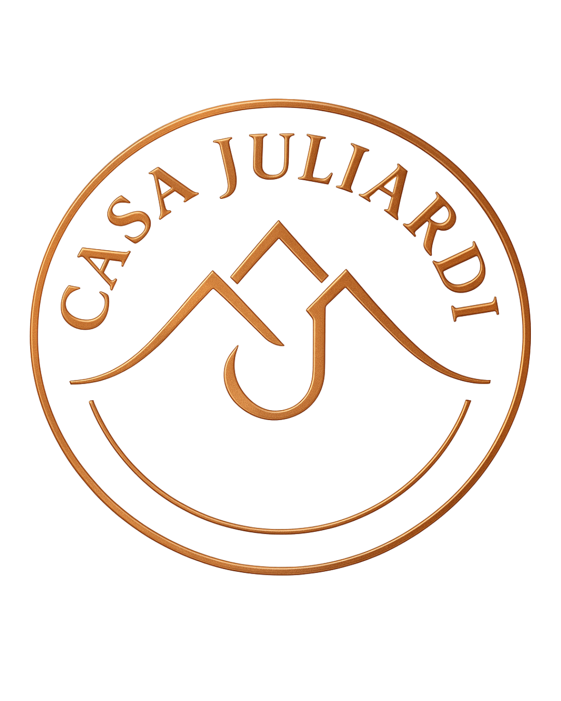
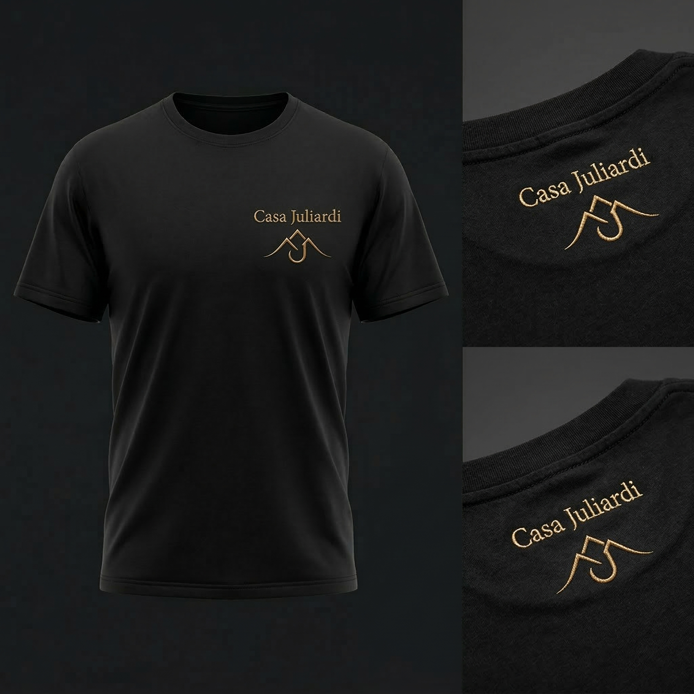
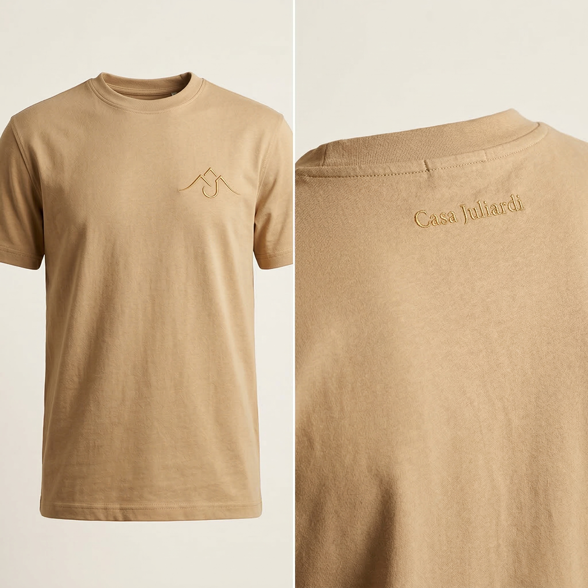
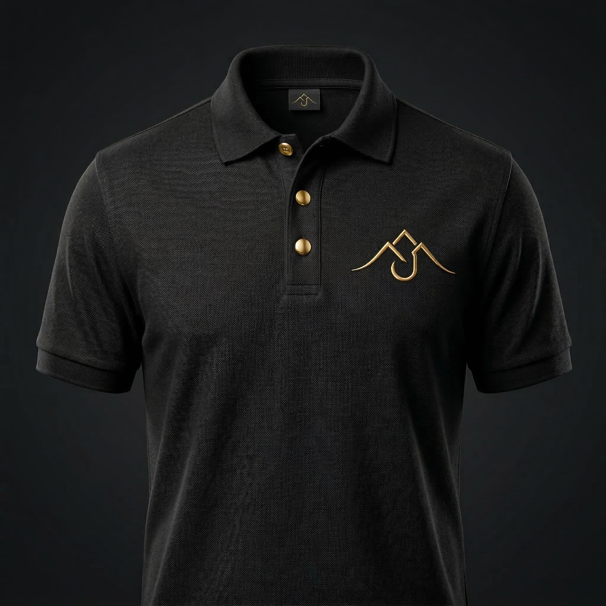
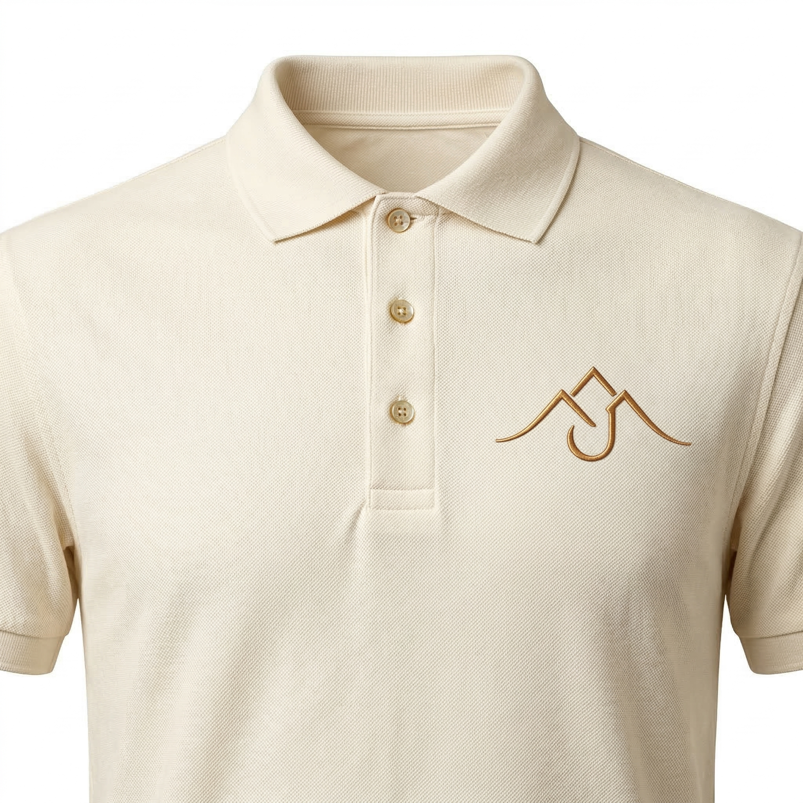

Camisetas e polos com a identidade da vinícola
Peças premium para presentear e vestir com orgulho.
Conceito
Inspiradas nas melhores vinícolas do mundo — de Bordeaux a Napa Valley. O símbolo da Casa Juliardi bordado em fio metalizado dourado. Peças que comunicam sofisticação sem precisar explicar.
Camisetas

Preta
AreiaSímbolo das montanhas bordado no peito esquerdo em fio dourado. Na nuca, "Casa Juliardi" bordado em Cormorant Garamond.
Polo

Piquet 100% algodão penteado. Botões dourados. Símbolo das montanhas bordado em fio metalizado dourado no peito esquerdo. Textura piquet visível — acabamento de grife.
Polo

Off-white quente com bordado dourado — sofisticação monocromática. Botões em tom dourado que completam a harmonia visual.
Especificações
Próximos passos: aprovar modelos, definir grade de tamanhos, solicitar amostras de confecção.